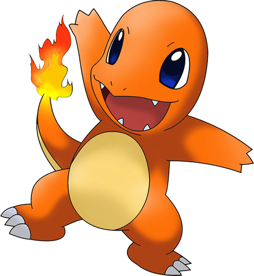
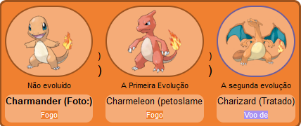
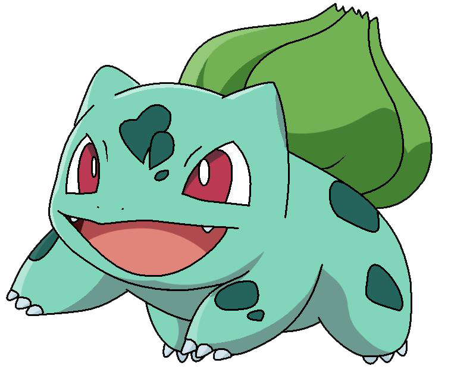

C h a r m a n d e r
Biologia
Charmander é um Pokémon bípelo e reptiliano com um corpo principalmente laranja e olhos azuis. Sua parte inferior do peito para baixo e as solas de seus pés são de cor creme. Tem duas pequenas presas visíveis em sua mandíbula superior e duas presas menores em sua mandíbula inferior. Um fogo queima na ponta da cauda esbelta deste Pokémon e brilhou lá desde o nascimento de Charmander. A chama pode ser usada como uma indicação da saúde e do humor de Charmander, queimando intensamente quando o Pokémon é forte, fracamente quando está exausto, vacilando quando está feliz e queimando quando está enfurecido. Diz-se que Charmander morreria se sua chama se apagasse. No entanto, se o Pokémon estiver saudável, a chama continuará a queimar mesmo que fique um pouco molhada e se diz que vaporiza a chuva.
E v o l u ç ã o
Charmander evolui para Charmeleon, que evolui para Charizard.
S q u i r t l e

Biologia
Squirtle é um pequeno Pokémon reptiliano que se assemelha a uma tartaruga azul-clara. Embora normalmente ande sobre suas duas pernas curtas, foi mostrado para correr em todos os fours em Super Smash Bros. A brigar. Tem olhos grandes, arroxeados ou avermelhados e um lábio superior ligeiramente enganchado. Cada uma de suas mãos e pés tem três dígitos pontiagudos. O fim de sua longa cauda semelhante a um esquilo se enrola para dentro. Seu corpo é envolto por uma casca dura que se forma e endurece após o nascimento. Esta casca é marrom no topo, amarelo pálido na parte inferior, e tem uma crista branca grossa entre as duas metades.
B u l b a s s a u r o
Biologia
Bulbasaur é um pequeno Pokémon anfíbio quadrúpede que tem pele azul-verde com manchas mais escuras. Tem olhos vermelhos com pupilas brancas, estruturas pontiagudas, semelhantes a orelhas em cima de sua cabeça, e um focinho curto e contundente com uma boca larga. Um par de dentes pequenos e pontiagudos são visíveis na mandíbula superior quando a boca está aberta. Cada uma de suas pernas grossas termina com três garras afiadas. Nas costas de Bulbasaur há um bulbo vegetal verde que esconde duas videiras esbeltas, que é cultivada a partir de uma semente plantada lá no nascimento. A lâmpada também fornece energia através da fotossíntese, bem como das sementes ricas em nutrientes contidas dentro.